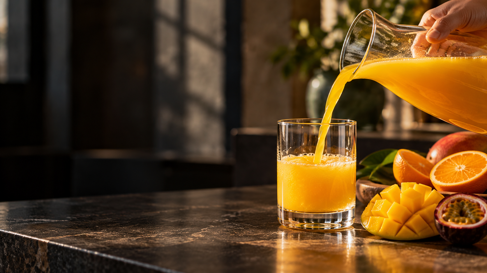
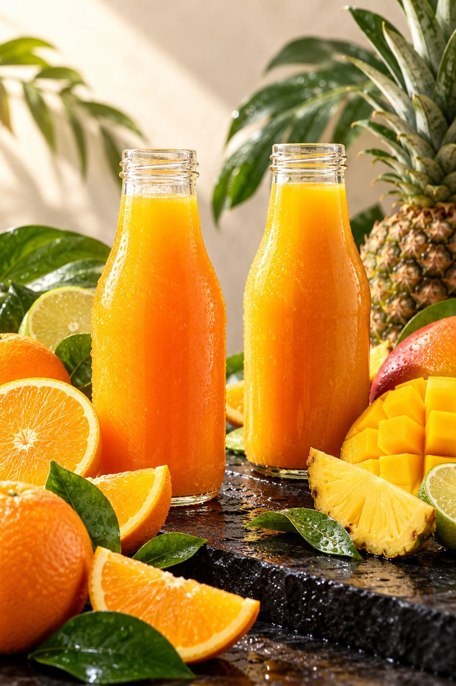
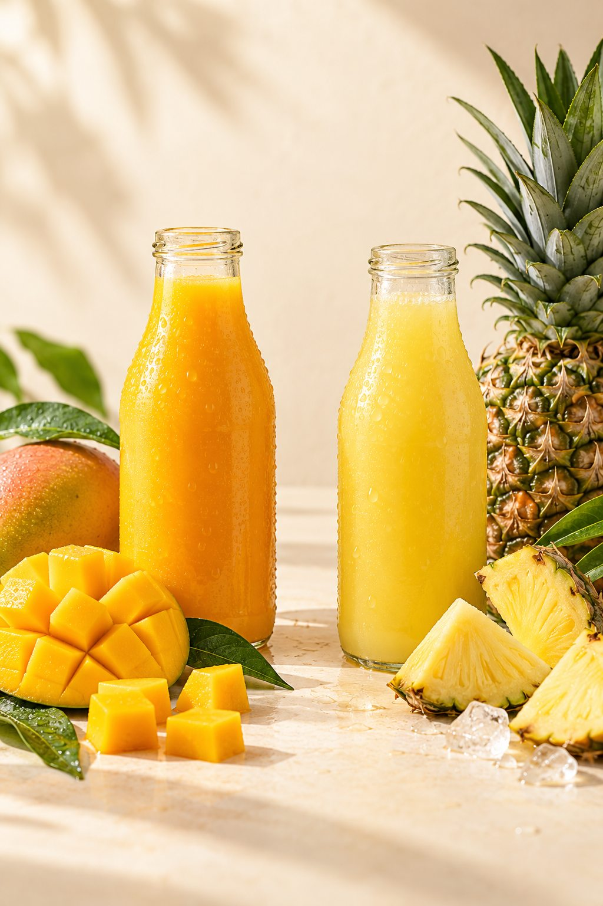
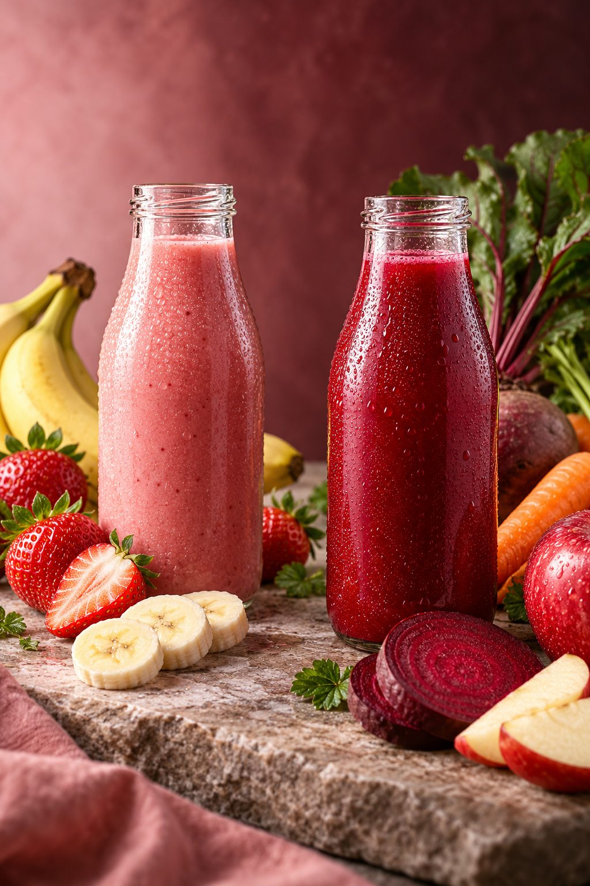

Freshness
Fruit-inspired ideas that feel bright, simple and inviting.

The Watashi Juice idea
Get to know the idea behind Watashi Juice — colourful flavours, thoughtful refreshment, and everyday moments worth sharing.

Our story
Watashi Juice began with an interest in the cheerful, familiar feeling of a good fruit drink — and a curiosity about how a proposed juice menu could make everyday refreshment feel more colourful.
Rooted in Kataza, Nakawa, Kampala, the concept brings familiar favourites alongside creative blends. It is imagined for individuals, families, offices and occasions that call for something bright and easy to share.
A colourful point of view
From sunny citrus pours to berry-led ideas, the proposed range is designed to feel simple to browse, welcoming to choose and fun to share.


The ideas behind the concept
Fruit-inspired ideas that feel bright, simple and inviting.
Familiar favourites and playful flavour combinations.
Making the proposed menu and ordering journey easy to understand.
Clear information, thoughtful communication and attention to detail.
Everyday or together
From a refreshing personal treat to family gatherings, office breaks and special occasions, Watashi Juice is imagined for the moments that bring people together.
Explore Our Juices